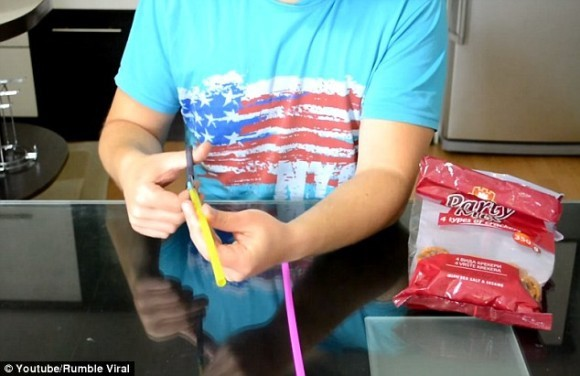
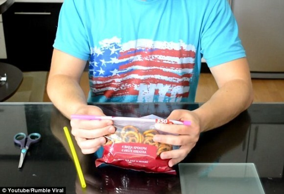
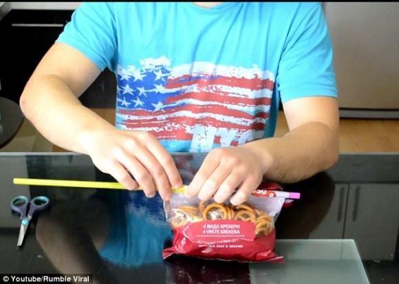
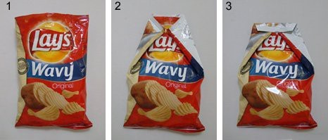
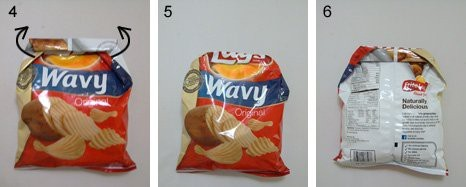
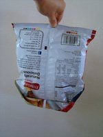
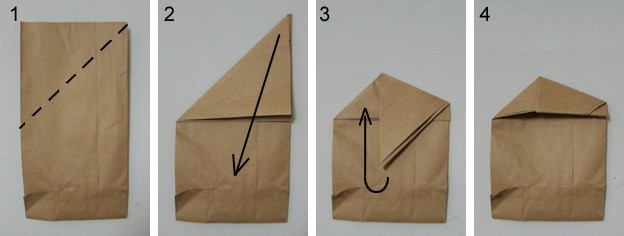
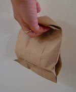
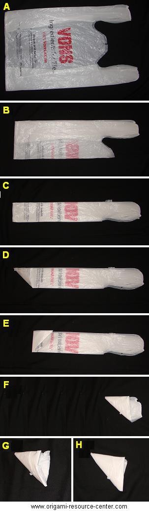
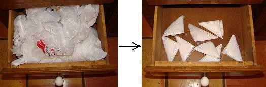

https://youtu.be/-wm57OTP-NM
준비물: 빨대 두개, 가위, 개봉된 봉지
1. 빨대 하나를 한쪽 면이 열리도록 자릅니다.

-------------------------------------
봉지만으로 밀봉하기
aa
댓글 0
유머 / 감동
작성자: 우울(darkgaria)
작성일: 2015-07-19 10:59:00
준비물: 빨대 두개, 가위, 개봉된 봉지
1. 빨대 하나를 한쪽 면이 열리도록 자릅니다.
-------------------------------------
봉지만으로 밀봉하기
댓글 0